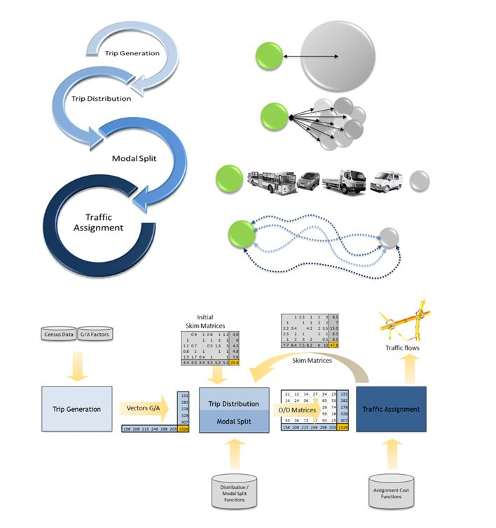

Part 4 projects for 2023
Data analytics in transportation
Minh Kieu
Lecturer
Department of Civil and Environmental Engineering, University of Auckland
These slides:
https://leminhkieu.github.io/p/Part4-Projects.html
Across two semesters
Work with a project member (so choose wisely!)
Multiple deliverables: Reports (a few of them), posters, presentations, codes, etc.
Great opportunity for you to develop your skills
Project 1: Video data collection and analysis

This year a Part IV group of students had collected the data and processed it for you
Project plan: (1) Develop a system to locate these vehicles in a real-world coordinates
(2) Estimate vehicle speed, flow, density
Project 2: Explore potential sites for a pilot Mobility as a Service project (MaaS).

Investigate the potential for public transport, shared services, walking and cycling in rural and provincial areas, particularly for the transport disadvantaged
Using GIS analytics and HTS data, we will develop a model to rank regions where MaaS may of best benefits, e.g. high population density but poor public transport connection and high car dependency, to provide MaaS as a first-mile/last-mile solution to connect to PT
Project 3: Simulating vehicle emissions and energy/fuel consumption
with different imported and existing fleet scenarios help avoid Aotearoa to become a dumping ground for high-emitting vehicles
Increase the fuel efficiency of the imported fleet and avoid high-emitting vehicles being dumped onto our market. This will help avoid Aotearoa becoming a dumping ground for high-emitting vehicles
We will develop macroscopic simulation models of the transport system in Auckland to simulate different scenarios of a future vehicle fleet (imported ICEs and electric vehicles). The outputs are fuel consumption and emissions. We will explore the suitable fleet that reduce the emissions while making sure that it is still economical for Aotearoa. Inputs considered: vehicle fleets, RUCs, energy consumptions, vehicle affordability, household income and household travel patterns (from HTS data)
Project 4: Identify vehicle types and estimating emissions from existing WK CCTV traffic camera

Work alongside the Project 1 team
Develop the skills and capability required to transition to a low-emissions transport system and support an equitable transition
A pair of students this year has developed an AI-based computer vision model to identify vehicles and their types directly from the existing CCTV footage from WK, without any other sensors. Now we can briefly estimate the emission levels from those footage. An extension of this work will be to collect emission data on site, and calibrate this computer-vision-based emission estimation model. If successful, this will be very economical way of estimating emissions throughout NZ
Career progress
The Part IV students who worked with me have often been able to learn programming and data analytis to continue working on roles related to transport analytics in their professional roles, e.g. 5/6 students of mine in 2020
Terresa Kim - Aurecon
Nairy Yaghobian - Hawkins
William Lay - GHD
Cameron Spick - Waka Kotahi NZTA
Liam Bramley - Abley
Project allocation
I can allocate two projects to two chosen pair of students, the rest of you will need to go through a quite random selection process
To be allocated, both students should have a GPA of >6.5, preferably those who have done well in Civil 303
Contact me asap if you are interested